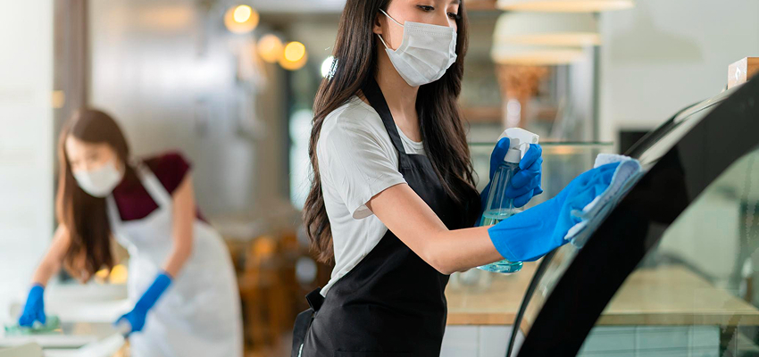
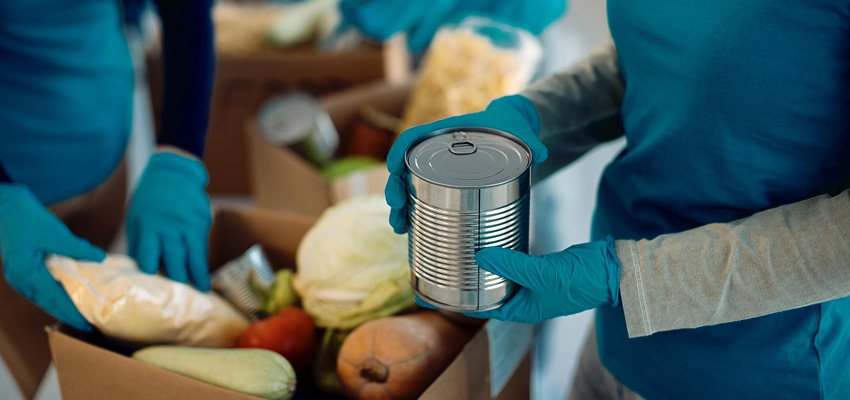
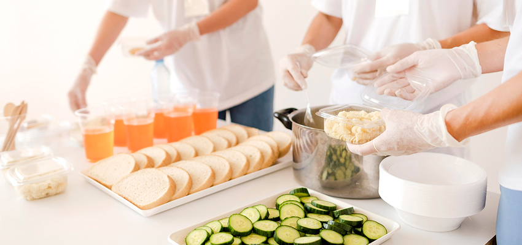
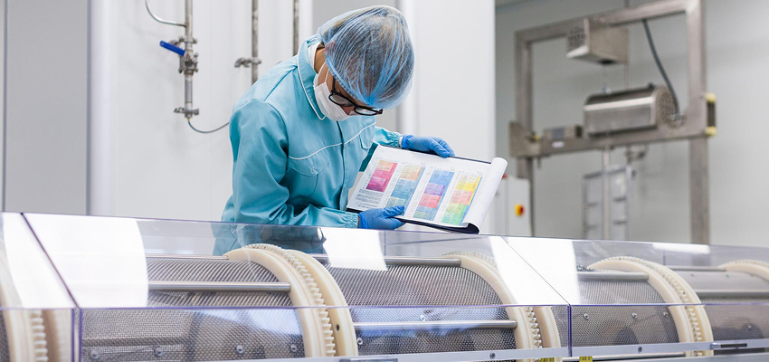
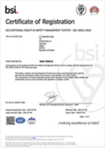
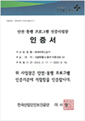
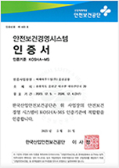

지속가능경영
지속가능경영
안전경영
CJ푸드빌은 고객과 임직원의 건강과 안전을
최우선으로 하고 있습니다.
안전경영방침
우리는 고객과 임직원의 안전을 위해무엇과도 타협하지 않는 안전문화를 실천한다.
- CJ푸드빌은 고객과 임직원의 건강과 안전을 최우선 한다.
- CJ푸드빌은 안전·보건·환경 법규 및 사회적 원칙과 기준을 철저히 준수한다.
- CJ푸드빌은 파트너(가맹점주, 협력사)와 함께 안전문화를 만들고 가치를 공유한다.
씨제이푸드빌 전 임직원은 안전경영방침을 실현하기 위해 다음 사항을 적극 실천한다
-
01
안전이 확보된 사업장(점포, 공장, 사무실)을 만든다.
-
 모든 사업장은 사전 안전성 평가(SDR)를 통해 안전을 확보한다.
모든 사업장은 사전 안전성 평가(SDR)를 통해 안전을 확보한다.
-
가맹점과 협력사를 포함하여 안전 교육을 철저히 한다.
-
02
정해진 방법과 절차를 준수한다.
-
정해진 방법과 절차를 반드시 준수하여 고객과 임직원의 건강과 안전을 최우선으로 한다.
(기본과 원칙 준수)
-
03
RISK를 발굴하여 개선한다.
-
설비 및 소방시설은 항상 청결하게 관리하고 정상작동상태를 유지한다.
-
Safety Day등 Risk 사전 예방활동을 통하여 잠재되어 있는 사고위험요인을 발굴하여 신속하게 개선한다.
-
04
비상 상황 시 신속히 대응한다.
-
정기적인 교육/훈련을 통해 비상 대응역량을 확보하고, 비상 상황 발생 시 신속히 대응한다.
-
사고 발생 시 철저히 원인을 파악하여 재발하지 않도록 한다.
식품안전
위해 요소를 철저히 관리하고 있습니다.
CJ푸드빌은 안전한 식품 관리를 業의 기본으로 삼고 있으며 국내·외 3,000여 개 점포 및 11개 제조사업장의 위해 요소를 철저히 관리하고 있습니다.
또한 식품안전 관리, 위해 물질, 법규/표시, 글로벌 등 5개 분야의 최고 전문 인력으로 구성된 전담부서를 운영하고 있으며,
법적 기준 대비 엄격하게 상향 조정된 안전한 식품을 고객에게 제공하기 위해 끊임없이 노력하고 있습니다.
-

점포 식품안전 관리
외식 및 베이커리 특성에 맞는 점포 위생 점검을 진행하고 있으며, 신규 점포 오픈 시 사전 진단 및 오픈 후 위생 관리가 안정화 될 수 있도록 철저하게 관리하고 있습니다.
또한 위생 매뉴얼이 점포에서 잘 지켜질 수 있도록 현장 교육을 정기적으로 실시하고, 점포 근무자의 식품안전 역량을 강화하기 위해 직무별/직급별 맞춤형 교육을 실시하고 있습니다. -

제조사업장 식품안전 관리
CJ푸드빌의 전 제품은 HACCP 기준에 따라 생산·관리되고 있으며, 음성공장은 글로벌 식품안전경영시스템인 FSSC22000을 인증 획득하여 입고부터 고객 제공까지의 전 밸류체인에서 안전성 확보를 최우선으로 하고 있습니다.
또한 CJ푸드빌의 식품안전 역량을 바탕으로 식품안전 관리 기술 역량 이전 등 협력업체와의 상생을 통해 위생관리 수준을 상향 평준화하고 있으며, 고객에게 안전한 식품만을 제공하기 위해 최선을 다하고 있습니다. -

RISK MANAGEMENT
CJ푸드빌의 모든 점포에서 제공하는 메뉴는 정기적으로 분석하여 안전성을 검증하고 있으며, 신규 식재 사용 시에는 법적 기준보다 엄격한 자사의 기준을 충족하는 원료만을 선정하는 등 위해 물질 안정성 검증에 힘쓰고 있습니다.
또한 국내·외 식품 관련 법규가 제·개정될 때마다 자사 영향도를 파악하여 조치하고 전 브랜드, 전 메뉴에 표시되는 원산지, 알레르기 등 표시사항을 철저하게 검증하고, 허위·과대광고에 대한 위험요소를 사전에 차단하고 있습니다. -

글로벌 식품안전 활동
국내 뿐 아니라 푸드빌이 진출한 국가별 최적화된 식품안전 관리 체계 구축을 지원함으로써
전 세계의 고객에게 안전한 먹거리를 제공하고 있습니다.
산업안전
무엇과도 타협하지 않는 안전문화를 실천합니다.
CJ푸드빌은 “고객과 임직원의 안전을 위해 무엇과도 타협하지 않는 안전문화를 실천한다”는 안전경영방침을 제정하여
고객과 임직원의 건강과 안전을 최우선으로 하고, 안전 법규 및 사회적 원칙과 기준을 철저히 준수하며,
파트너(가맹점주, 협력사)와 함께 안전문화를 만들고 가치를 공유하고자 최선을 다하고 있습니다.
-
ISO45001 운영
국제표준 안전보건경영시스템 취득/운영CJ푸드빌은 23년 7월 6일 영국표준협회(BSI)로부터 전 직영 점포 및 음성공장, 물류 센터 등
전 사업장 대상으로 ISO45001(국제표준 안전보건경영시스템) 인증을 취득/운영 중이며,
고객과 임직원의 안전을 위해 비상 상황 대응 교육 및 훈련, 전기시설 특별진단, 법규 및 현장 위험 진단 등 화재, 산업재해 예방 활동을 적극 운영하고 있습니다.
안전보건경영시스템을 국제적 수준으로 고도화하고 글로벌 사업에도 정착시키기 위하여 지속적으로 노력하고 있습니다. -
점포 안전 관리
직영점 안전관리CJ푸드빌은 점포의 특성에 맞는 체크리스트를 통하여 현장의 건축, 전기, 소방 안전, 환경 분야의 Risk 진단을 실시하여 안전사고를 사전에 예방하고 있으며
안전관계 법규의 준수 / 이행 상태를 평가하여 안전이 확보된 점포가 운영되도록 노력하고 있습니다.
또한 계절별로 발생할 수 있는 풍수해, 동절기 화재 예방, 연휴 대비 특별 점검을 하고 있습니다.- 직영점 핵심 안전 활동
- 사업안전성 평가 입점 후보지에 대한 위험요소를 체크하여 공사에 반영, 공사 시작 전 도면 검토, 공사 중/ 공사 완료 후 점검
- 안전의 날 월 1회 대표이사 등 경영진이 현장의 안전 위험 요소 확인, 개선 의사 결정 활동 진행 (점포는 자체 안전점검/개선활동 진행)
- 법규준수평가 및 정기 진단 1회/반기 산업안전보건법 등 8개 분야의 법규에 대한 점포의 이행상태,현장의 안전 Risk 진단
- AMS 시스템 운영 안전/화재 사고 발생 시 신속한 사고대응 및 동종재해 재발방지를 위해 사고관리시스템을 운영
가맹점 안전관리가맹점 산업재해 예방을 위해 한국산업안전보건공단에서 주관하는 ‘프랜차이즈 안전 동행 프로그램’인증을 취득/운영하고 있으며

안전·보건 정보의 제공, 점포 안전교육, 점포 안전진단을 시행하고 있습니다.
또한 가맹점 오픈 전 신규 가맹점주 대상으로 점포 운영에 필요한 안전법규와 사고사례 등 안전 교육을 실시하고 있으며,
가맹점을 관리하는 영업 담당자 대상으로도 주기적 안전 교육 및 안전관리 역량강화를 실시하고 있습니다.- 가맹점 핵심 안전 활동
- 점포 산업안전 교육 시행 신규점주 오픈 전 안전교육 (오픈 전 2시간) / 기존점주 안전교육 (년 1회)
- 점포 안전진단 담당 SC가 안전/전기/소방 분야 안전점검
- 위험성평가 작성 지원 가맹점 위험성평가 모듈 개발하여 점포에서 자체적으로 년 1회 진행할 수 있도록 지원
- 안전/보건 정보 제공 법규 및 사고사례, 주요설비 매뉴얼 등 안전관련 정보 월 1회 가맹점에 제공
-
제조사업장 안전 관리
제조사업장의 안전관리는 KOSHA_MS을 기반으로 자체 운영 조직으로 관리되고 있으며,

정기적으로 산업안전팀에서 사업장 산업안전진단 및 법규준수평가, 협의회를 진행하여 끊임 없이 Risk를 발굴하고 개선하고 있습니다.
또한 신규투자 시 사전안전성평가 및 기술지원을 실시하여 안전이 보장된 제조사업장을 만드는데 노력하고 있습니다.- 제조사업장 핵심 안전 활동
- KOSHA MS 시스템 운영 안전경영시스템 절차에 따른 프로세스 실행
- 안전보건 협의체 운영 산업안전보건위원회, 협력업체 안전위원회 운영
- 안전작업관리 시행 안전작업허가 / 출입허가 / 부서별 안전평가 / 공사업체 안전관리
- 근로자 보건관리 MSDS 및 경고표지 관리, 작업환경 측정 및 개선, 보호구 지급 관리
- 소방안전관리 소방교육 및 훈련, 화재예방 및 홍보, 자위소방대 조직운영, 법적 점검 대응
-
글로벌 사업장 안전 관리
CJ푸드빌은 미국, 베트남, 인도네시아 3개국 뚜레쥬르 점포 및 공장을 운영하고 있으며,
국내 사업장 및 점포와 동일한 산업안전체계, 프로세스의 구축 지원과 정기적인 현장 Risk 진단을 통해 안전사고 및 화재사고를 사전에 차단하고 관리하고 있습니다.
또한 중대사고 및 issue 발생 시 사고 조사 및 기술지원을 통해 동일 사고의 재발 방지를 위해 노력하고 있으며
현지 담당자의 산업안전 역량향상을 위해 기술 이전 및 교육을 지속적으로 진행하고 있습니다.- 글로벌 사업장 핵심 안전 활동
- 정기 안전진단 시행 입점 후보지에 대한 위험요소를 체크하여 공사에 반영, 공사 시작 전 도면 검토, 공사 중/ 공사 완료 후 점검
- 글로벌 공장 사전안전성 평가 월 1회 대표이사 등 경영진이 현장의 안전 위험 요소 확인, 개선 의사 결정 활동 진행 (점포는 자체 안전점검/개선활동 진행)
- 글로벌 안전관리 기준 수립 1회/반기 산업안전보건법 등 8개 분야의 법규에 대한 점포의 이행상태,현장의 안전 Risk 진단
- 국내 핵심안전활동 글로벌 수평전개 신규점포 사전안전성평가, safety day등 글로벌 환경에 맞도록 변경 적용
- 글로벌 담당자 역량이전 및 교육 안전활동에 필요한 매뉴얼 배포, 점검방법 교육, 안전관리에 필요한 기술검토